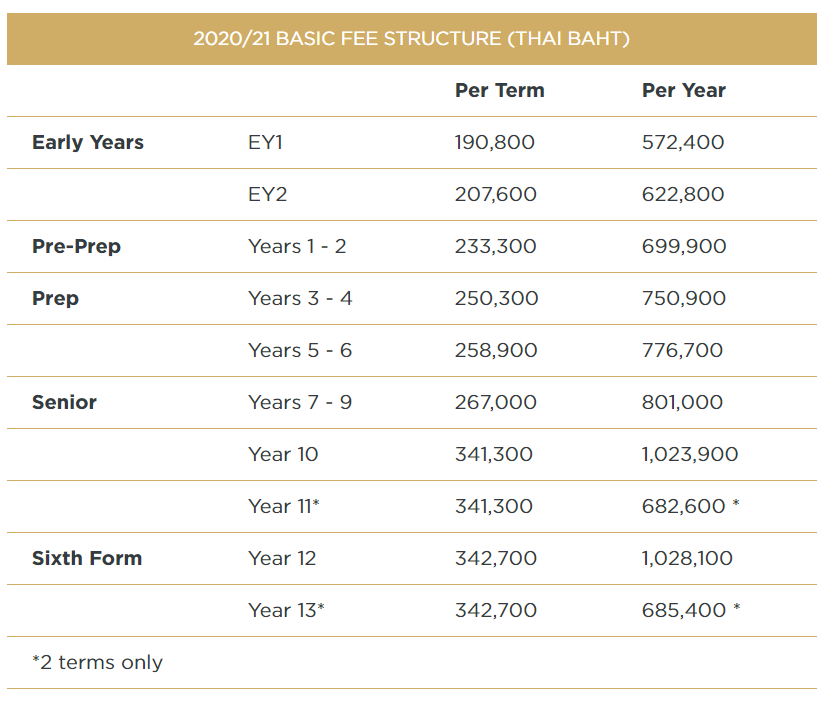
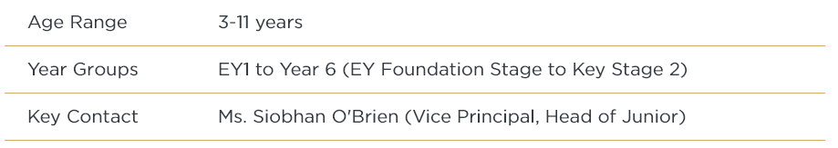
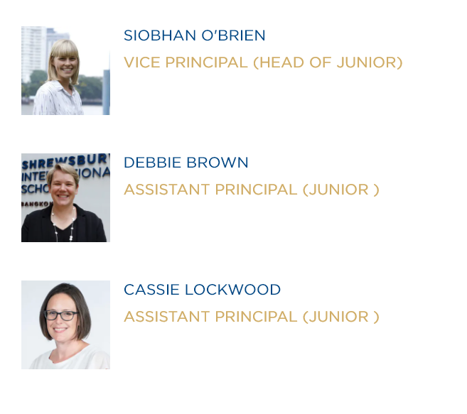
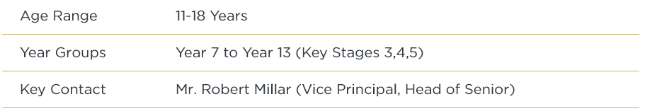
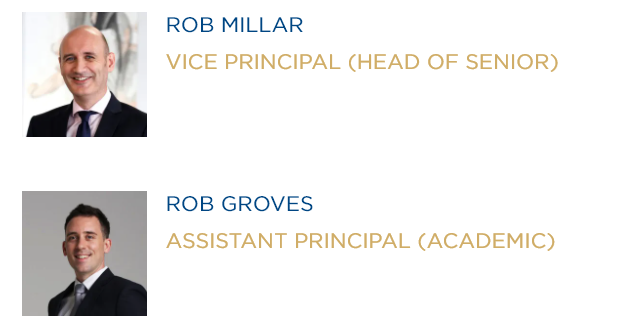
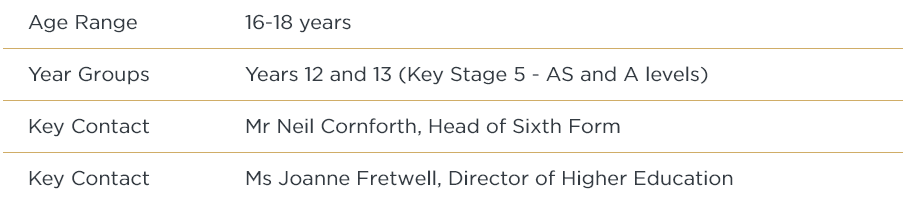

WELCOME
It is my privilege and pleasure to welcome you to the website of Shrewsbury International School Bangkok Riverside.
Benefiting from a truly inspiring and purpose-built environment on the banks of the Chao Phraya River in the very heart of Bangkok, Shrewsbury is a well-established and highly successful school that sets the benchmark for international schooling in Thailand.
The values of a Shrewsbury education, inspired by the eminent boarding school in England, are clear throughout this website. The purposefulness of the pupils, our drive for excellence and the highest quality in all we do as staff, will shine through on these pages. I also hope that you gain a sense of the care and compassion that underpins learning and success in all domains at Shrewsbury. We really do live by our motto, ‘if the heart is right all will be well’.
I hope you enjoy discovering Shrewsbury through this website, but this really is no substitute for coming to see us and experiencing the school in action. Please pay us a visit; we look forward to welcoming you warmly.
Chris Seal
Principal - Shrewsbury International School Bangkok - Riverside
Campus
Shrewsbury International School has two campuses: Riverside (Charoenkrung) and City Campus (Rama 9). Riverside offers through-education from 3 to 18 years, whilst children who complete their Primary education at City Campus move on to Senior School at Riverside at the age of 11 years.
Both campuses have specially designed Early Years Departments for our youngest children aged 3 to 5; safe, secure and stimulating environments for children to explore, and where they develop core skills that set the foundation for successful lifelong learning.
Early Years provision is divided between Early Years 1 (for children aged 3 before 31st August) and Early Years 2 (for children aged 4 before 31st August). All of our EY classes are staffed by fully qualified international and local teachers.
WHY SHREWSBURY EARLY YEARS?
Shrewsbury Standard: A commitment to all 5 of Shrewsbury's High Quality
Learning principles - Collaborative, Engaged, Personal, Ambitious and Informed -
providing the foundation for a successful learning journey towards some of the best
examination scores in Asia, and placement in the world's top universities.
Curriculum: A Unique Early Years curriculum. based the UK Early Years
Foundation Stage framework and adapted for our international student family
Approach: A child-led active learning approach (incorporating
elements of Emelia Reggio
Philosophy) that nurtures emotional and social development alongside strong academic
foundations.
Experience: An experienced team of highly qualified Early Years
practitioners, supported
by fully trained Teaching assistants
Supportive Ratios: Two teaching assistants working with teachers in
every EY class
Specialist Provision: A variety of specialist training in areas such as Forest School
Education and Massage in Schools. Specialist lessons in music, PE and Thai.
Environment: A purpose-built, self-contained, safe, secure and
beautifully resourced
Early Years environment
Learning with nature: A focus on natural resources and outdoor learning
that encourages
creativity, including re-designed Early Years garden (opening August 2020) that provides
an inspirational outdoor learning space that is 4x the area of our indoor EY classrooms.
WHAT OUR PARENTS SAY
"IT IS OBVIOUS TO US THAT THE TEACHERS HERE REALLY CARE FOR EVERY CHILD. THEY KNOW THEIR INDIVIDUAL NEEDS AND INTERESTS AND ARE CLEAR ON WHAT THEY NEED TO IMPROVE."
A UNIQUE LEARNING JOURNEY
OVERVIEW
Age Range : 3-5 years
Year Groups: EY1 & EY2 (Early Years Foundation Stage)
Key
Contact : Ms. Siobhan O'Brien (Vice Principal, Head of Junior)
MEET SOME OF OUR EY TEACHERS

A DAY IN EY1
FEES
School fees and initial charges are reviewed annually. School fees and initial charges for the next academic year are published in Term 3 (June). Fees and charges for the 2020-21 academic year are as follows:
Initial Charges
In addition to the ongoing fee payments for current students, the School applies the following initial charges during the application process and prior to any successful applicant starting their first term at Shrewsbury:
Application Fee: An application fee of THB 5,000 per child is payable upon submitting the application form. The application fee is not refundable.
Guaranteed Place Fee: Once a place is offered, parents must complete and return the Acceptance Form along with a Guaranteed Place Fee of THB 225,000 per child in order for the child's place to be secured. The Guaranteed Place Fee, which is non-refundable, includes a one-off payment of THB 30,000 for life membership of Shrewsbury International School Bangkok Alumni Association (SISBAA).
Refundable Deposit: A one-off Refundable Deposit ofTHB 200,000 is payable for every child and will be invoiced together with the Tuition fees prior to the student’s first term. Where a child completes Year 6 at City Campus and then transfers to Year 7 at Riverside, the refundable deposit will be transferred to Riverside. The conditions of refund are as follows:
- upon the student's graduation (completion of Year 13 at Riverside) from the school; or
- when advanced written notice is received at least 60 school days before the child leaves; or
- when the school requires the applicant's departure for reasons other than disciplinary
Prior to being enrolled at Shrewsbury, families must submit all of the above charges, plus any outstanding documents and school fees that are due for the first term (or remaining part thereof), as listed below.
School Fees
The current fee structure is provided in the table below.
The fees include: all tuition, lunch, morning and afternoon snacks, all books and use of the library. Many after-school activities programmes are provided free of charge.
The fees do not include: purchase of school uniform and kit, personal equipment or IT devices, individual music tuition, external examination charges, compulsory residential trips, expeditions, school bus. Some after school activities are charged. For some of these additional charges, direct or advance payment may be required.
Fees are payable on a term-by-term basis and in advance. Discounts apply for families with 3 or more children enrolled at the school at any one time. A discount of 5% is applied for the 3rd child and 10% for the 4th child onwards.
OVERVIEW
THE JUNIOR SCHOOL LEADERSHIP TEAM
OUR APPROACH
I would like to extend a warm welcome to you and your family from the team here at Shrewsbury International School Bangkok Riverside. As the Head of the Junior School, I believe very much in developing the whole child - academically, socially and emotionally - through a creative curriculum approach; a happy confident child is a successful one.
The Junior School at Shrewsbury is a vibrant, exciting and challenging place for children to learn and thrive. We are pleased to welcome children from all cultures, backgrounds and experiences into our community, providing them with a learning environment that is warm, friendly, safe and caring.
Whilst respecting the language and culture of Thailand, English is the language of our classrooms and corridors, helping to ensure that even at a very young age, children are beginning to develop the life skills they will need to succeed at international universities and companies.
Our focus is to provide a high-quality education for children aged 3 to 11 years that is both creative and stimulating, aiming to give them the very best possible start to their learning journey and to provide a firm foundation on which their future education and life experiences can be developed, nurtured and built upon.
FACILITIES AND LEARNING
The Junior School comprises of two purpose-built environments – the Pre-Prep School and the Prep School – created especially for young learners, and to provide a safe and stimulating environment in which to learn. Supported by substantial ongoing investment, these spaces have evolved over time.
We have the advantage of being able to retain our small size and individual character whilst benefiting from our close connections with the Senior School, their specialisms and resources.
Learning in the Junior School follows the English National Curriculum - adapted and developed to meet the needs of our talented, multi-lingual, international student body. As children progress through the Junior School, play-based active learning and discovery gradually leads on to more complex and specialist subject matter, with learning from across the curriculum being introduced and reinforced through a series of connected topics or themes that change every half term. Digital technology is integrated across the curriculum, helping to deliver cutting edge educational experiences, and to enhance children's learning.
Our experienced, talented teachers, are recruited mainly from the UK, and are at the leading edge of education practice. They nurture both the academic and social development of children in their care, and are charged with providing outstanding opportunities for them both in and out of the classroom.
PASTORAL SUPPORT AND PARENTAL ENGAGEMENT
We are proud of Shrewsbury's strong academic emphasis. Our passion for learning is evidenced in the energetic activities and colourful displays that fill our school.
We are equally proud of the individual care and support that we provide to each and every child. High adult:child ratios in the classroom are backed up by a range of learning support personnel. Our children come to school happy and confident in the knowledge that their individuality is recognized, respected and celebrated, and that there is always an adult who they can talk to and that will seek to understand and address any issues that they may be experiencing.
We recognise that Parents know their children best and that they are the most important teachers in their lives. We work together with families to ensure children enjoy a rewarding and enriching learning experience, to develop a life-long love for learning. At Shrewsbury Riverside strive to promote and enrich positive relationships with our parents and the community. Our staff is committed to working as a team; you will find us to be open and approachable.
I am looking forward to getting to know you and supporting your child on their exciting learning journey through Shrewsbury and beyond.
Ms Siobhan O'Brien
Vice Principal (Head of Junior)
OVERVIEW
THE SENIOR SCHOOL LEADERSHIP TEAM
WELCOME TO OUR SENIOR SCHOOL
The Senior School at Shrewsbury International School Bangkok Riverside offers an inspirational, ambitious British curriculum education to boys and girls aged 11-18 years.
The broad and engaging curriculum offered in Key Stage 3 (ages 11-14) allows students to develop a grounding in a wide range of subjects, before they make increasingly specialised subject choices in Key Stage 4 (GCSE) and Key Stage 5 (A level).
Shrewsbury students achieve consistently class-leading results in these internationally recognised examination qualifications which in turn allow them to access the very best universities around the world, supported every step of the way by our award winning Higher Education team.
The rigorous academic curriculum is complemented by a rich and varied co-curricular programme that provides important opportunities for students to explore their interests outside the classroom. Shrewsbury has a strong reputation in sport, music and the creative and performing arts. Our school seeks to nurture in every student a sense of global citizenship and cultural awareness, and leadership skills alongside a commitment to service to others.
OUR APPROACH
The Senior School is vibrant, exciting and challenging: a place for students to mature into responsible young adults as they learn together in a thriving international environment. We work closely with families to ensure that students have high academic aspirations, achieve success in public examinations and discover interests that stay with them for life. Our first class facilities and highly qualified staff enable students to explore their academic fascinations and to develop a lifelong love of learning.
Throughout their time in the Senior School, students enjoy outstanding opportunities to explore and develop their own interests, have access to the very latest learning resources, technology and facilities, and benefit from the experience and expertise of our truly exceptional teaching team.
A supportive network of pastoral and learning support specialists, Heads of Year and Form Tutors, with whom many students and parents form a particularly close bond, closely monitor progress both inside and out of the classroom, ensuring that the wellbeing and happiness and students in their care remains the school’s first priority.
ACADEMIC PROGRAMME
Students follow a broad and balanced programme of study that is based on the English National Curriculum and adapted for our multi-lingual, international context. Full details of the curriculum are available in the Curriculum Guides.
All students in Years 7 to 11 study English, Mathematics and Science (either combined or separate sciences), supplemented by a range of languages, humanities and creative and performance subjects. As students move up through Senior School they focus upon subjects of their choice, preparing for the internationally recognised General Certificate of Secondary Education (IGCSE) courses in Years 10 and 11 and Advanced Level (A Level) in Years 12 and 13.
Students are encouraged and supported to take greater personal responsibility for their learning. Collaboration, group work and individual assignments are all used to develop the students’ skills, knowledge and understanding through ever more independent approaches to learning and discovery.
DEVELOPING PERSONAL SKILLS
We are proud to enable our students to develop the skills and attitudes to be lifelong learners: to think independently, to challenge and discuss rather than be treated as empty vessels to be filled with facts. We ensure that they have high academic aspirations and achieve success in public examinations but more importantly to develop a lifelong love of learning.
Our team of dedicated Higher Education advisors supports students throughout their applications to the world’s leading universities and to prepare them for careers in industries that have yet to be invented. This requires our curriculum to be flexible and to focus upon the higher order skills of collaboration, communication and creative problem solving. This education for life extends well beyond the traditional classroom: through the “You Time!”after-school activities programme, House System, International Award, and a carefully constructed “Learning for Life” programme, we encourage our students to develop leadership skills and become compassionate and responsible members of the community, willing to question while retaining respect for traditional values. We challenge them to take calculated risks, to develop their sense of adventure, to explore new interests and to understand the place that these have in a balanced and healthy approach to life.
We are proud to teach our students to learn, to think independently, to challenge and discuss rather than be treated as empty vessels to be filled with facts. Our success speaks for itself!
Mr Robert Millar
Vice Principal (Head of Senior)
OVERVIEW
THE SIXTH FORM SCHOOL LEADERSHIP TEAM
OUR APPROACH
The Sixth Form experience at Shrewsbury International School equips students to successfully meet their aspirations and longer term objectives both in terms of their university choices and their career paths, within the context of a highly competitive, challenging and dynamic global environment.
As students begin to focus their sights on life beyond the school campus, so the style of teaching and the levels of independence evolve to reflect the rising lines of sight. This is also mirrored in the physical environment, as students’ time in school becomes increasingly centred within our purpose-built Sixth Form centre.
Our aim is to help students prepare for the world beyond school; to encourage them to take greater responsibility for their personal learning and academic progress, to nurture assertiveness and leadership and management skills, and to reflect on their achievements whilst identifying further opportunities for self development. Most importantly of all, we seek to challenge students so that they may fully appreciate their own potential, and so that they set goals for themselves which match the ambition and pioneering spirit that characterizes our School.
The Sixth Form provides an outstanding and structured environment for students to work collaboratively with their academic teachers, pastoral tutors, Higher Education advisors, peers and, of course, their parents. We focus on ensuring that all of these individual groups work together in harmony, to enable the highest goals to be achieved, and provide access to the World’s leading universities; this is synergy in motion.
THE SIXTH FORM PROGRAMME
We offer a traditional programme of A-Level subject options, each providing a rigorous and in-depth understanding of the course content. The cumulative, integrated knowledge that is built through specific combinations of A-level subjects provides access to some of the most competitive university courses and highly-regarded career specialisms in later life. Students normally study four A-Levels, each taught by highly experienced teachers who are specialists in their respective fields.
In addition to their academic subject options, all students participate in the Shrewsbury’s bespoke “Reading the World Programme”, which combines opportunities for research, analysis, debate and presentation, and which is designed to develop high-level critical thinking and life skills that are so important for successful learning at university. Alumni regularly comment on the immense value of the course and the clear advantage this course provides not only in terms of their application to university, but also compared to their fellow students once they have progressed to the lecture theatres and seminar rooms of leading universities around the world.
The Sixth Form studies and tutorial programme provides a focus for the monitoring and tracking of academic performance and regular self-reflection, creating an ethos of continuous improvement.
All students continue to participate in Physical Education provision, and have access to a diverse range of enrichment opportunities via the school’s extensive co-curricular and Excellence programmes, representing the school in the very highest level of competition.
The extensive and diverse Leadership Programme, provides clear and focused opportunities for all Sixth Form students to contribute to the continued development of the Shrewsbury Community, while generating and honing their leadership skills to prepare them to be successful future leaders.
THE SIXTH FORM CENTRE
Reflecting the maturity and specific learning needs of A-Level students, Sixth Form life is centred within our dedicated Sixth Form centre, located on the top floor of the Senior School, overlooking the Chao Phraya River.
This is the base for two hundred students, where a focused, calm and dynamic atmosphere prevails, creating the structure for study at the highest level and encouraging intellectual discussion and quiet contemplation. The space is equipped with tailored teaching areas and IT resources, an independent research facility that supports individual learning, and easy access to Higher Education and careers guidance via a dedicated team of full time specialist staff.
In addition, there are zoned study areas that offer silent and collaborative working environments and a social area that allows relaxation during break times and at the end of the school day.
PASTORAL CARE AND SUPPORT
Shrewsbury is a warm, friendly and caring school that welcomes children from all cultures, backgrounds and experiences. It is important to us that we maintain an ethos where each child is happy, and feels secure, valued and fulfilled, and that we create an environment where their individuality is recognised and respected.
Our school prioritises the wellbeing of our students, placing their needs and happiness at the centre of everything we do, and everything we ask our students to do. Our teachers pride themselves on the individual attention and pastoral care that they provide to students and on the partnerships they develop with parents.
We work hard to build a professional yet caring rapport between the students and staff. In this way all students know that there are adults in the school they can trust. Every student has a teacher dedicated to overseeing their social, emotional and academic progress through the school (their class teacher in Junior School, or their Form Tutor in Senior School).
Students can also speak to the School Listening Team whenever they need someone to talk to about their concerns and worries. The Listening Team, which comprises staff members from across the school, have been specially trained in Listening skills, and will listen, advise and support students with their issues. We work in English and in Thai to allow our Thai students to talk in their first language if they prefer.
As an additional level of support for individual students, the School also has a dedicated Wellbeing Team for both Junior and Senior Schools. The role of the Wellbeing Team is to support children in overcoming barriers to learning and to help these students reach their full potential. These barriers may be caused by social, emotional or behavioural issues and the Wellbeing Team will, based on their deep understanding of the student and the pressures they face both within school and beyond, work with them to help establish a positive and productive approach to their school life.
When more complex issues arise we work closely with local services and specialist providers to ensure that we are offering the most appropriate care and support for all of our students.
SAFEGUARDING AND CHILD PROTECTION
Shrewsbury International School is committed to Child Safeguarding; a commitment that is underpinned by strong safeguarding systems and processes, and team of dedicated support staff, headed by a Director of Child Protection and Safeguarding, who together ensure that these systems are fit for purpose, and maintained and adhered to at all times.
These systems allow students to feel safe, to feel empowered to talk about their concerns, and to feel that their concerns will be heard. The systems are understood by everyone in our community and we all recognise our responsibility towards building an environment in which our students can grow into confident, caring and compassionate adults.
The wellbeing of our students is of paramount importance and is fundamental to the way we operate.
OUR COMMITMENT
Shrewsbury International School is a child-protecting school fully committed to fulfilling its responsibilities for protecting students. In order to meet this commitment to Child Protection, the school:
- will create an atmosphere within the school which helps students to feel safe and able to talk freely, believing that they will be listened to and valued;
- will ensure children know that there are adults in the school whom they can approach if they are worried;
- will raise the awareness of all staff about their responsibility for identifying and responding to possible concerns of abuse;
- will provide support and guidance to all members of the school community;
- will dedicate time in the curriculum to help students understand how to stay safe from abuse and to give them the confidence to seek help.
OUR STANDARDS
Our Child Protection procedures are informed by three documents: The Child Protection Act of Thailand (2003), Keeping Children Safe in Education (2017 - UK), and the United Nations Convention on the Rights of the Child. Following this guidance, the school aims to strike a balance between:
- the rights of students to express their views on decisions made about their lives;
- the rights of parents to exercise their responsibilities towards the child;
- the duty of the interested agencies to intervene where the child’s welfare requires it.
HEALTH, SAFETY AND MEDICAL
Healthy, active lifestyles, supported by good nutritional choices are essential to the wellbeing, happiness and development of our students. These principles permeate many aspects of school life at Shrewsbury, from the range of opportunities for physical recreation and play, to food provided in our canteens and the education that surround students’ meal choices, and crucially, to the partnerships that we form with parents to ensure they have the information and guidance they need to ensure that the same principles are continued in the home environment.
The physical health of our community is supported by specialist staff at our on-site medical centre. We also employ a full-time health and safety manager to ensure that the operational aspects of the school are conducted in accordance with the highest international standards and best practice.
READY TO LEARN
The Ready to Learn programme provides targeted advice for parents on the themes of e-safety, wellbeing and healthy lifestyles.
Shrewsbury is a thoughtful community that brings together talented students, ambitious parents, outstanding teachers and experienced school leaders. We work together to build a culture that excites and inspires young people to learn and succeed, wherever their interests and ambitions lie.
Our exam results speak for themselves. But it is not just about the academics. Every child is encouraged to explore new interests and develop new passions. Shrewsbury has in place in a range of Excellence Programmes and after-school activities designed to nurture new interests, and to challenge and support students who are gifted in music, the creative and performing arts and in sport. Here, we take pleasure in achievements of all kinds.
The School recognises that its carefully chosen teaching community is its prize asset. Our highly skilled teachers are constantly supported through wide-ranging professional development to be outstanding in the classroom.
SENIOR MANAGEMENT TEAM
OUR FOUNDING GENERATION
In 2018, we said farewell to 14 exceptional students; the first generation to have completed the entire 15-year learning journey from EY1 to Year 13 at Shrewsbury. Read what the students who know us best think about our exceptional community.
OUR STUDENTS
Shrewsbury students are committed to excellence both inside and outside the classroom and strive to maintain the very highest standards of academic progress, achievement and performance.
Our students seize opportunities to make a meaningful contribution to all aspects of school life and take inspiration from the success of others. When not performing or participating themselves, they take interest and pride in the activities and achievements of their friends and classmates by attending school concerts, drama productions and sports matches. In addition, they volunteer their time freely for the benefit of the school and the wider community.
The members of our student body delight in the uniqueness of a Shrewsbury education and are proud of the links with our sister school in the UK. They understand that academic rigor and development of interests, skills and perspectives beyond the curriculum will allow them to achieve their dreams at university, the world of work and in life.
OUR TEACHERS
The teachers at Shrewsbury International School know that it is their commitment, dedication and expertise that set them apart. They use their experience and expertise to support and inspire students to achieve their very highest potential.
Our development plans are dedicated to bringing quality staff to the school, and to commit investment in the infrastructure, facilities, resources and training they need to deliver the highest quality 21st Century learning experience for our students.
Our teachers understand the role they have to play in shaping success at Shrewsbury and the benefits that new research, thinking and technology have to offer in the classroom and beyond. They are committed to being life-long learners themselves and maintain the very highest standards of teaching by seeking out appropriate professional development opportunities.
At the same time, the individual care and support they provide helps to create an environment where every child feels safe and secure and can thrive; a supportive, compassionate and caring approach which they seek to foster throughout the community, and to instill amongst students in their daily interaction with others.
The expertise we hold as a staff community ensures that where necessary, a variety of individual and specialist learning needs can be identified and supported, including English as an Additional Language (EAL), native language support, special needs education, enrichment and counseling; provisions that help to ensure that every child can enjoy a happy and successful education at Shrewsbury.
SCHOOL LEADERSHIP
The School is led by The Principal, Mr. Chris Seal, who is responsible for the strategic direction of the educational programme and for the people of the Shrewsbury community.
The two Vice Principals, Ms. Siobhan O'Brien and Mr. Robert Millar, oversee the operation of the Junior School (EY1 to Year 6) and the Senior School (Year 7 to Year 13) respectively. They are supported by Assistant Principals who have specific domains of responsibility: Junior School (x2) and Senior Academic (Y7-Y13), plus Assistant Principal's for our Staff and Student bodies.
Together with The School Manager and The Director of Business Services, who provide expertise and leadership on matters including Health and Safety, Security, Financial Planning and Operations, they form the school’s Senior Management Team (SMT).
The SMT meets weekly according to a set agenda of standing items, and to review and address all matters arising in the school’s day-to-day function. This body is responsible for setting the school’s educational direction as articulated in The School Development Plan.
In addition to the SMT, The School Leadership Team (SLT) meets every half term and brings together a full range of experience from across the school teaching community to advise The Principal on matters such as Inspection and Accreditation, Technology, Library and Study Resources, Educational Visits, Language Learning and future School Development Planning.
GOVERNANCE
The operation of Shrewsbury International School Bangkok is overseen by a Board of Governors which advises The Principal on the full breadth of the school programme.
This advisory board meets three times a year and brings together a wide range of local, regional and international experience in education, legal matters, finance, child protection and safety.
Two governors of Shrewsbury School UK sit on the advisory board, bringing their experience of school governorship in the UK context and ensuring that The School fully complies with the terms of the licensing arrangements.
The Executive Committee of The School meets monthly and is chaired by The School Proprietor. In this forum, representatives of the Board of Governors and The School’s Senior Management Team meet to ensure that The School’s operation is safe and secure and aligned with the priorities established in The School Development Plan. It has a role in setting short, medium and long term financial plans including the operational and capital development budgets.
THE BOARD OF GOVERNORSE
Sir David Lees (Chairman), Former Chair of the Court of the Bank of England
Dr. Jirayuth Mahattanakul, School Manager Shrewsbury International School Bangkok and Dean of Faculty of Graduate Studies at Mahanakorn University of Technology
Mrs. Suchada Leeswadtrakul, Businesswoman
Mr. David Roberts, Businessman and member of the Listing Committee of the Stock Exchange of Hong Kong
Mr. Chali Sophonpanich, President of City Realty Co Ltd, founder of Shrewsbury International School Bangkok
Dr. Kanokwan Wongwatanasin, Chairperson of Internet Solution & Service Provider Co., Ltd, Chairperson of Thai Sugar Mill Co., Ltd.
Ms. Sarah Canning-Jones, Lawyer
Ms. Carla Howarth, Managing Director, GTC Ltd (Global Training Consultancy Ltd)
Member of the Board of Governors of Shrewsbury School UK
Mrs Supawan Lamsam, Businesswoman and representative of Brown University in Thailand
Mr John Clark, Member of the Board of Governors of Shrewsbury School UK
Dr. Parita Suaphan, Academic and Businesswoman
Attendees:
Dr. Tim Nuttall, Director of Schools, Shrewsbury International Asia
Mr. Jonathan Holterhoff, Director of Business Services, Shrewsbury International Asia
OUR PARENTS
At Shrewsbury International School we know that parents are a child’s first and most important teachers. We work side by side with parents to ensure that every child is happy and learning to the very best of their ability.
Day-to-day, our parents take an active interest in their child’s individual learning journey and work in partnership with academic staff, to review and provide feedback on their child’s progress. This partnership is supported by active electronic communication, face-to-face meetings and regular information-sharing and community events at school, many of which are led by the Parents themselves in conjunction with the Parents Association (SP) and/or class representatives.
Our parents embrace the vision, philosophy and moral ethos of a Shrewsbury education, understanding that life skills are just as important as academic success. To this end, our parents encourage and support their children to participate and excel in a wide range of pursuits beyond the classroom – and are present as often as they can be to provide support and offer praise as their child pursues their passions and hobbies; from sport, music, drama and art, to outdoor education and community service. At the same time, our parents are full partners in supporting the school and its vision, instilling in their child the knowledge that with ambition comes the need for integrity.
OUR ALUMNI
At Shrewsbury International School we are proud of all the exceptional students who have been part of the school community over the years. Some families are with us for just a short time whilst many others graduate after their A-level exams, having spent the entire 15 years of their school life at Shrewsbury.
Keeping in contact with students who have left Shrewsbury is very important regardless of the length of time that a student was with us and we are very grateful to the countless alumni who volunteer their time, knowledge and skills to help shape the future of our community, and who provide direct support to our current students; their achievements both at school and beyond, serve to inspire the current generation.
Our Alumni Association (SISBAA) is always keen to hear from every former student to find out what they are doing now - so please, keep updating us and let us know how you are doing, or if you think your insights, experience and skills can be of help to current Shrewsbury students.
Please e-mail: alumni@shrewsbury.ac.th or call 02 675 1888.
Shrewsbury International School is a warm, friendly and caring school that welcomes children from all cultures, backgrounds and experiences. It is important to us that we maintain an ethos where each child can be happy, secure, valued and fulfilled and their individuality is recognised and respected. The social and emotional well being of every child is a priority for all our staff.
In our ‘Learning for Life’ programmes we cover personal well-being, health and relationships. Each month we have a value which underpins assemblies and discussion/work in class. Linked to this we have a strong ‘student voice’ in the school – children have responsibilities which they are proud of, for example becoming a member of the School Council. Children know they can make a difference to our school community and the wider world.
It is important to celebrate the success of all learners. We do this through daily positive feedback in lessons, recognition in regular ‘Celebration Assemblies’, feedback in Communication Books to parents, special certificates and events throughout the year.
We provide our children with many opportunities to perform, present and listen in a variety of situations. They are encouraged to participate in assemblies, class performances and whole school events to share their achievements and talents whilst developing and strengthening their confidence and self belief.
The House system at Shrewsbury has been set up to enhance the sense of community within the school. All children from Year 1 to Year 13 are members of a House. The many House events unite children from different classes, ages, cultures and friendship groups to work together. They build vital teamwork skills, pride in themselves and respect for their peers. Our children actively support organised charity work, through annual events such as ‘Charity Week’ or ‘Peace Day’ as well as responding to events that need our care and full support such as natural disasters. This enables our children to be proactive, to empathise and to understand the difficulties of others and realise that collectively we can help to support and rebuild communities.
Our group of trained staff in the Listening Team are available at a child’s request to listen to their worries or concerns about matters at home or at school. We have an excellent team of Learning Mentors who help with the induction of all new children into the school. They also support any child who may require help to build their confidence, friendships and emotional well-being.
A POSITIVE ENVIRONMENT
At Shrewsbury, the safety, welfare and interests of our community, children and adults, are our first priority. We expect all members of our community to behave in accordance with the regulations and educational ethos of the school, and to respect each other at all times.
We seek to build strong partnerships with our parents to ensure that these priorities are upheld at all times, and to contribute towards these goals as follows:
- Safety and Security: all adults should comply with the school’s security requirements. They should wearing official ID badges at all times whilst on site, should only use washrooms that are designated for adult use and should only be on site during lesson time for pre-arranged appointments or organized events.
- Photography and film: parents re asked to consider the privacy of other people (especially of other people’s children) and whether they have given their permission of their picture to be taken or shared.
- Punctuality: parents are asked to help ensure that children always arrive promptly for school, and that parents arrive promptly for appointments and to collect children.
- Engage with your child’s learning and the community: parents are invited to many events throughout the year – we hope that you will come along and show an interest in your own child’s learning and be part of our community.
- Support children in a respectful way: parents are encouraged to support their children in performances and at competitive events, but should always be encouraging, respecting the feelings and efforts of all participants.
- Support children’s interests and encourage group participation: our aim is to give children opportunities to explore their own interests, to achieve a healthy balance between their academic activities and other pursuits, and encourage them to make positive contributions to the community. We hope that children will find enjoyment from being part of groups, teams and ensembles where they can share their talents and inspire those around them
The School’s operation is built upon a framework of policies stored in The Policy Compendium.
The Board of Governors provides advice on the school policies as requested by The Principal. The compendium is organised in line with the sections of school operation as identified in the CIS accreditation and inspection procedure:
- School Guiding Statements
- Teaching and Learning
- Governance and Leadership
- Faculty and Support Staff
- Access to Teaching and Learning
- School Culture and Partnerships for Learning
- Operational Systems
A selection of policy documents are made available on the school’s website. Other policies which may be needed by parents are housed in The Parent Portal which requires a unique login and password to access. All policies are available to all members of staff.
Each one of the school policies is reviewed regularly by The Senior Management Team and other colleagues who have specific responsibility and expertise. It is the responsibility of The Senior Management Team to ensure compliance with the school policies and to review and amend them in accordance with regulatory change and actual school case practice.